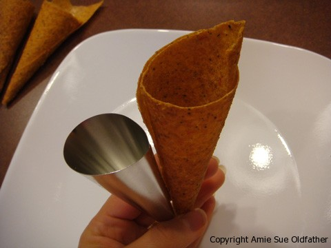
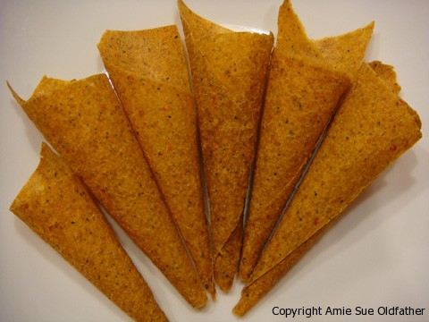

Spicy Not Tuna Wraps

~ raw, vegan, gluten-free, nut-free ~
This creation came about when I had some leftover ingredients in the fridge. I had some corn wraps already made up along with some leftover Not Tuna and presto!
In the picture above I took the wraps and softened them but passing them under the faucet real quick like. I then wrapped it around a metal cone and placed it in the dehydrator for a few hours to create the cone shape. See the picture below.
These were so fun to make. You could easily make this wrap without forming it into a cone. You could just roll it up as well. Use your touch of creativity!
Ingredients:
Yield: 12 tortillas
Wraps:
- 4 cups chopped yellow bell pepper (about 4)
- 3 cups corn, kernels (about 6 ears) use organic only
- 2 cups of zucchini, peeled and chopped (about 2 medium)
- 1 1/2 Tbsp nutritional yeast
- 1 Tbsp lemon juice
- 1/2 tsp Himalayan pink salt
- 1 avocado, peeled, seeded, and mashed
- 3 Tbsp psyllium powder **add as the last ingredient
Not Tuna Salad:
- 1/2 cup raw almonds, soaked for 24 hours, rinsed and drained
- 1/2 cup raw sunflower seeds, soaked 4-6 hours, rinsed and drained
- 1/4 cup water, if needed
- 1/4 cup celery, minced
- 1/4 cup red onion, minced
- 3 Tbsp lemon juice
- 1/2 Tbsp kelp powder
- 1/2 tsp salt
- 1/2 tsp dried dill weed or 1/2 Tbsp fresh dill weed
- 1/4 cup fresh parsley, minced
Preparation:
Wraps:
- Place the yellow bell pepper and zucchini in a high-speed blender, and process until smooth.
- Add the corn kernels, nutritional yeast, lemon juice, and salt, and process until smooth.
- Add the avocado and puree again. While the blender is still running, add the psyllium powder and blend well for a few seconds.
- Using 1/2 cup of the mixture for each tortilla, use a small offset spatula to quickly form 4 flat disks on the dehydrator tray lined with a nonstick sheet. Each disk should be about 6 inches in diameter, and they should not quite touch each other.
- Spread the tortillas into round disks quickly, or the mixture will thicken and become difficult to spread.
- Dehydrate at 115 degrees (F) for 4 hours, or until you can easily remove them from the nonstick sheets.
- Turn the tortillas over onto mesh dehydrator screens.
- Place an additional mesh screen on top of each tray. This makes them flatter and easier to store.
- Continue dehydrating another three to four hours, until dry but still flexible.
Store in an airtight container in the fridge for up to two weeks, or in the freezer for up to two months.
- Can be moistened with water to soften.
Not Tuna Salad:
- In the food processor, fitted with the “S” blade, combine; almonds, sunflower seeds, water, celery, onion, lemon juice, kelp powder, salt, and dill. Process to a paste.
- Kelp powder – you can find this at a health food store. I looked at our local grocery stores and couldn’t find it. You could use Dulse Flakes instead if you can’t find the kelp powder or if you want a stronger flavor. We ended up using both.
- Hand mix in parsley, so you don’t end up with a green paste.
- Serve with crudités, crackers, or as a filling in tortillas and wraps.
- Crudités basically means veggie tray. Crudités are traditional French appetizers comprising sliced or whole raw vegetables which are dipped in a vinaigrette or another dipping sauce. Crudités often include celery sticks, carrot sticks, bell pepper strips, broccoli, cauliflower, and asparagus spears. I had never heard that word before school. I figure I can’t be the only person out there who is unfamiliar with that word … am I?


© AmieSue.com